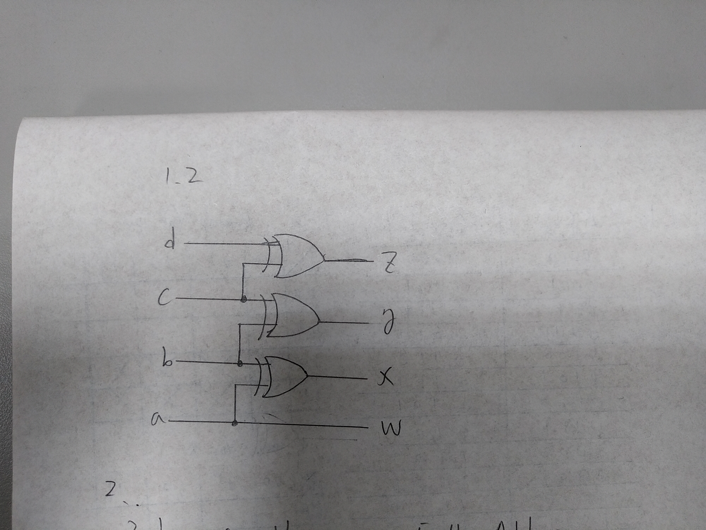
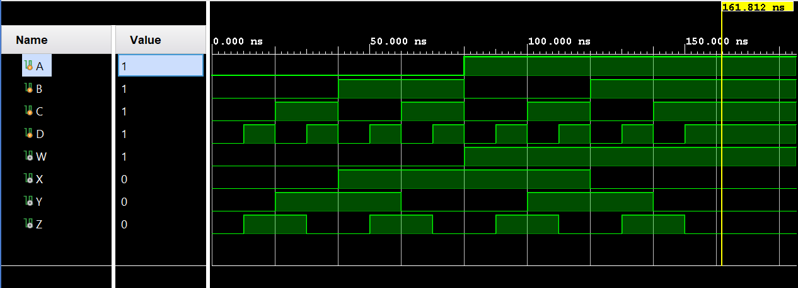
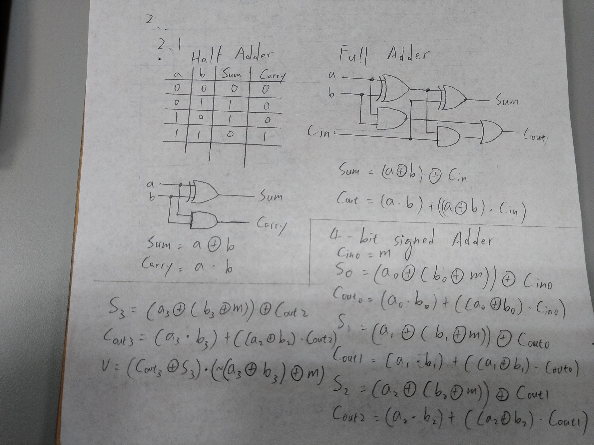
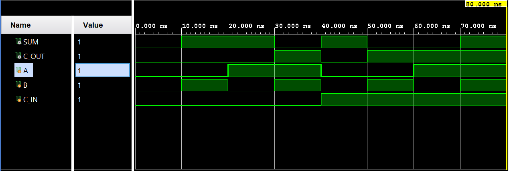
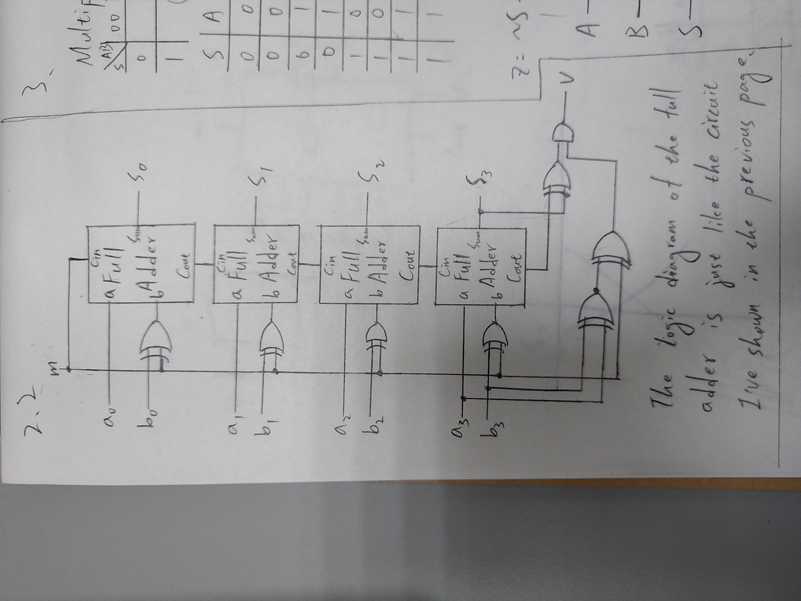
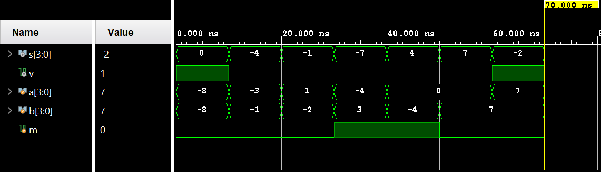
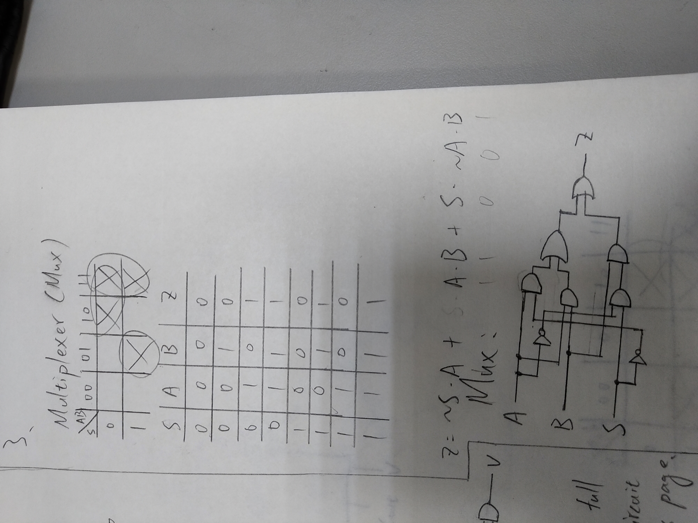
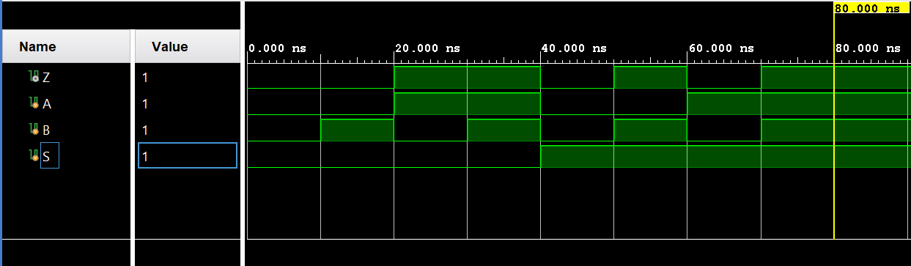
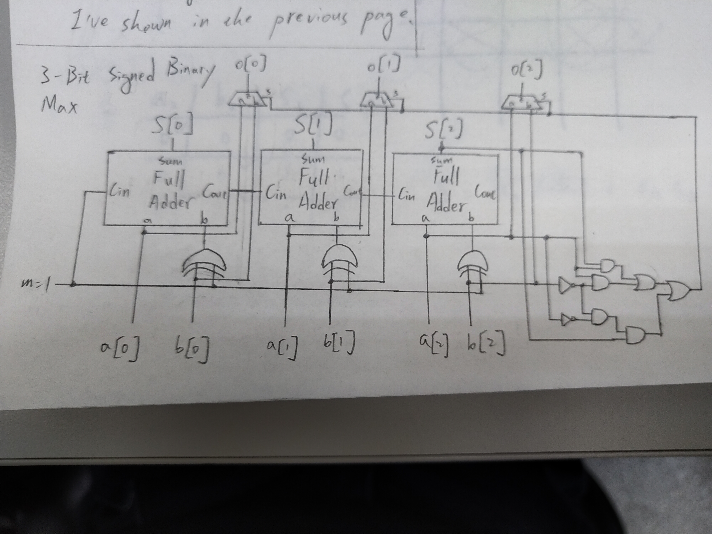
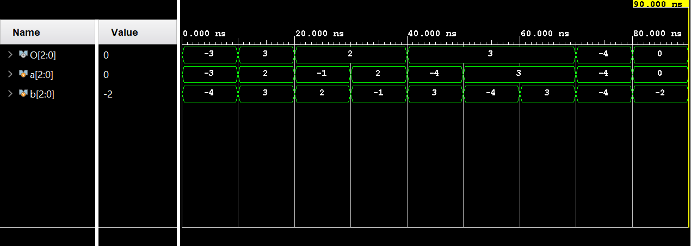

106033233 資工大四 周聖諺
Input: a, b, c, d
Output: w, x, y, z
First, we can observe that the MSB of the Gray code and binary code are always the same so it doesn't need any conversion. The Boolean equation is
In addition, if you list the table of the conversion from 4-bit Gray-code to binary code, you can observe that , and, . Thus, we can design the circuit as the following code.
Boolean Equation:
BCD to Gray Code Truth Table
| Decimal | Binary Code (abcd) | Gray Code (wxyz) |
|---|---|---|
| 0 | 0000 | 0000 |
| 1 | 0001 | 0001 |
| 2 | 0010 | 0011 |
| 3 | 0011 | 0010 |
| 4 | 0100 | 0110 |
| 5 | 0101 | 0111 |
| 6 | 0110 | 0101 |
| 7 | 0111 | 0100 |
| 8 | 1000 | 1100 |
| 9 | 1001 | 1100 |
| 10 | 1010 | 1111 |
| 11 | 1011 | 1110 |
| 12 | 1100 | 1010 |
| 13 | 1101 | 1011 |
| 14 | 1110 | 1001 |
| 15 | 1111 | 1000 |
Verilog Code
assign w = a;
assign x = a ^ b;
assign y = b ^ c;
assign z = c ^ d;
Block Diagram

RTL Simulation

Full Adder
Input: a, b, c_in
Output: sum, c_out
4-Bit Adder-Subtractor
Input [3:0]a, [3:0]b, m
Output [3:0]s, v
For 1-bit addition, it would yield 0 when 1 + 1 or 0 + 0. Otherwise, it would yield 1. As a result, we can use XOR gate to implement the addition operation like the following code.
Boolean Equation:
where is the carry-in bit c_in.
Verilog Code
assign sum = (a ^ b) ^ c_in;
As for the carry bit, we've known that the carry bit would be 1 while two of the input bits: a, b and c_in (the carry bit of the previous one) are 1. Thus, we can express the Boolean equation as the follow
Boolean Equation:
where is the carry-in bit c_in.
Verilog Code
assign c_out = (a & b) | c_in & (a ^ b);
Logic Diagram

RTL Simulation

As for 4-bit adder, all we need to do is that concatenate the 4 full-adder. Thanks to 2's complement. The full-adder also works when the input number is negative in the form of 2's complement. To adapt the subtraction, we only need to invert the number and set the carry-in as 1.
wire C_IN;
wire C_OUT_0, C_OUT_1, c_OUT_2, c_OUT_3;
assign C_IN = m;
full_adder U0(.a(a[0]), .b(b[0] ^ m), .c_in(C_IN), .sum(s[0]), .c_out(C_OUT_0));
full_adder U1(.a(a[1]), .b(b[1] ^ m), .c_in(C_OUT_0), .sum(s[1]), .c_out(C_OUT_1));
full_adder U2(.a(a[2]), .b(b[2] ^ m), .c_in(C_OUT_1), .sum(s[2]), .c_out(C_OUT_2));
full_adder U3(.a(a[3]), .b(b[3] ^ m), .c_in(C_OUT_2), .sum(s[3]), .c_out(c_OUT_3));
However, we need to handle the overflow or underflow exceptions. We've known that the overflow might occur in 4 cases: (1) positive + positive, (2) negative + negative, (3) negative - positive, or (4) positive - negative. In this 4 cases, if we detect the last carry-out bit is different from the MSB of the summation, it means there is an overflow.
To detect the 4 possible cases:
To detect the difference between carry out and the MSB.
where is the last carry-out bit.
Boolean Equation:
Verilog Code
assign v = (c_OUT_3 ^ s[3]) & (~(a[3] ^ b[3]) ^ m);
Logic Diagram

RTL Simulation

Full Adder
Input: a, b, c_in
Output: sum, c_out
3-Bit Adder-Subtractor
Input [2:0]a, [2:0]b, m
Output [2:0]s, v
Multiplexer
Input: a, b, s
Output: z
3-Bit Signed Binary Max
Input: [2:0]a, [2:0]b
Output: [2:0]o
Same as the module in Lab 1-2.
Same as the module in Lab 1-2.
In the file mux.v, it's just a 1-bit simple multiplexer. If m is 0, it would output the signal of input a, vice versa. Following are the Boolean equation and the code.
Boolean Equation
Verilog Code
assign z = ((~s) & a) | (a & b) | (s & (~a) & b);
Logic Diagram

RTL Simulation

It's easy to know that if the 2 number a and b have different sign, we only need to choose the positive one. Otherwise, we need to use the subtractor and let a minus b to determine which one is larger. If the MSB is 0, number a is larger. If the MSB is 1, number b is larger. We can simply form the Boolean equation of the multiplexer selection as the following.
Boolean Equation
where is the difference between number a and b and is the selection input of the multiplexer. To output the larger number, we only need to apply the multiplexer and the selection to each bit.
Verilog Code
wire [2:0]S;
wire M;
wire SEL;
assign M = 1;
bit3_add_sub U0(.a(a), .b(b), .m(M), .s(S));
assign minus = S;
assign SEL = (a[2] & (~b[2])) | (a[2] & S[2]) | ((~a[2]) & (~b[2]) & S[2]);
mux U1(.a(a[0]), .b(b[0]), .s(SEL), .z(o[0]));
mux U2(.a(a[1]), .b(b[1]), .s(SEL), .z(o[1]));
mux U3(.a(a[2]), .b(b[2]), .s(SEL), .z(o[2]));
Logic Diagram

RTL Simulation

In the lab 1-3, I used the star symbol * to express the AND logic and plus symbol + to represent the OR logic. However, the logical operator is totally different from the computational operator and the simulation shown that it was wrong. Finally, I found the misuse and correct the errors.
In this lab, I've learned that how to design a logical circuit with Verilog and simulate the behavior with RTL simulation. In addition, thanks for this lab, I reviewed the logic design briefly to recap the design of the full adder and Gray code.
Java T Point - Binary to Gray code conversion
Provide the design example of the binary-to-Gray-code convertor.
GEEKSFORGEEKS - 4-bit binary Adder-Subtractor
Provide the design example of the 4-bit binary Adder-Subtractor.
Electronics Tutorials - Binary Adder
Provide the design example of the full adder.
Explain how the two's complement works.